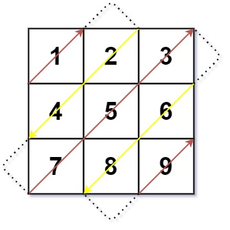

498. 对角线遍历
模拟：对角线编号 r+c，偶数往右上、奇数往左下；撞到边界就按规则拐进下一条对角线，一格一格走完。
思路
- 方向不用单独的标志位：对角线编号
r+c为偶数时整条往右上走，为奇数时往左下走。 - 右上途中：撞最右列就向下拐，撞第一行就向右拐；顶角（如右上角）先判列界再判行界，否则会走出界。
- 左下途中：撞最后一行向右拐，撞第一列向下拐。
- 每走一格写一个
out[k]，共m*n格，走完即停。
图解
最优解
1class Solution {2 public int[] findDiagonalOrder(int[][] mat) {3 int m = mat.length, n = mat[0].length;4 int[] out = new int[m * n];5 int r = 0, c = 0;6 for (int k = 0; k < m * n; k++) {7 out[k] = mat[r][c];8 // 对角线编号 r+c：偶数往右上走，奇数往左下走；撞到边界就拐进下一条对角线9 if ((r + c) % 2 == 0) {10 if (c == n - 1) r++; // 顶到最右列：向下拐（角上先判列再判行）11 else if (r == 0) c++; // 顶到第一行：向右拐12 else { r--; c++; }13 } else {14 if (r == m - 1) c++; // 顶到最后一行：向右拐15 else if (c == 0) r++; // 顶到第一列：向下拐16 else { r++; c--; }17 }18 }19 return out;20 }21}题目
给你一个大小为 m x n 的矩阵 mat ，请以对角线遍历的顺序，用一个数组返回这个矩阵中的所有元素。
示例 1：

输入：mat = [[1,2,3],[4,5,6],[7,8,9]] 输出：[1,2,4,7,5,3,6,8,9]
示例 2：
输入：mat = [[1,2],[3,4]] 输出：[1,2,3,4]
提示：
m == mat.lengthn == mat[i].length1 <= m, n <= 1041 <= m * n <= 104-105 <= mat[i][j] <= 105
题面取自力扣当前版本。
数据快照 2026-11-04。题面版权归力扣所有，本站点仅供本人学习使用，请勿对外发布。